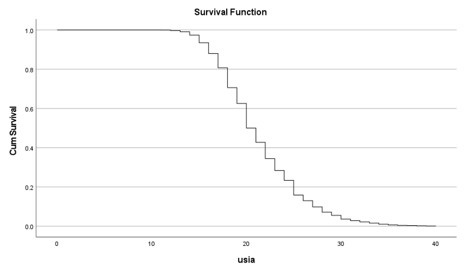
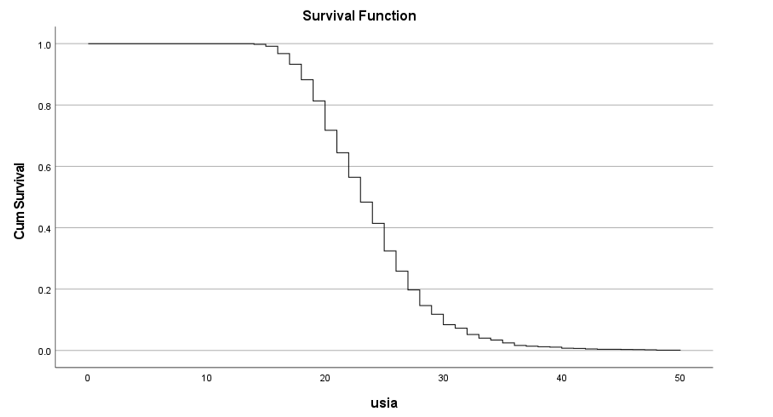

3,587
Total Observations
2
Study Regions
3
Independent Variables
2
Survival Models
Project Overview
Age at first marriage is an important demographic indicator that can be analyzed as a time-to-event outcome. This project applies survival analysis to examine the timing of first marriage and identify demographic factors associated with the event.
The analysis uses data from 1,826 individuals in Tasikmalaya Regency and 1,761 individuals in Bandung City. The analysis focuses on gender, education, and employment status as explanatory variables.
Kaplan-Meier estimation is used to describe the survival pattern, followed by Cox Proportional Hazards modeling and Accelerated Failure Time modeling to investigate factors associated with the timing of first marriage.
Variables
Dependent Variable
Time-to-Event: Age at First Marriage
The event of interest is the occurrence of an individual's first marriage.
Independent Variables
- Gender
- Education
- Employment Status
Descriptive Analysis
Descriptive analysis was conducted to summarize the demographic characteristics of respondents and examine the average age at first marriage across gender, education, and employment groups.
Tasikmalaya Regency
| Variable | Category | Frequency | % | Mean Age |
|---|---|---|---|---|
| Gender | Male | 850 | 46.5 | 23.92 |
| Female | 976 | 53.5 | 19.11 | |
| Education | No Schooling | 6 | 0.3 | 18.17 |
| Elementary School | 1,076 | 58.9 | 20.63 | |
| Junior High School | 391 | 21.4 | 21.24 | |
| Senior High School | 255 | 14.0 | 23.42 | |
| D1/D2/D3 | 14 | 0.8 | 25.21 | |
| D4/S1/Prof/S2/S3 | 84 | 4.6 | 24.32 | |
| Employment | Not Working | 526 | 28.8 | 19.74 |
| Working | 1,300 | 71.2 | 22.00 | |
| Total | 1,826 | 100 | 21.35 | |
Bandung City
| Variable | Category | Frequency | % | Mean Age |
|---|---|---|---|---|
| Gender | Male | 819 | 46.5 | 25.61 |
| Female | 942 | 53.5 | 22.33 | |
| Education | No Schooling | 4 | 0.2 | 24.25 |
| Elementary School | 381 | 21.6 | 21.49 | |
| Junior High School | 300 | 17.0 | 22.10 | |
| Senior High School | 710 | 40.3 | 24.34 | |
| D1/D2/D3 | 105 | 6.0 | 26.46 | |
| D4/S1/Prof/S2/S3 | 261 | 14.8 | 26.97 | |
| Employment | Not Working | 612 | 34.8 | 22.63 |
| Working | 1,149 | 65.2 | 24.51 | |
| Total | 1,761 | 100 | 23.86 | |
Age at First Marriage
The average age at first marriage was 21.35 years in Tasikmalaya and 23.86 years in Bandung.
Gender Pattern
Female respondents had a lower average age at first marriage than male respondents in both regions.
Education Pattern
Higher education groups generally showed higher average ages at first marriage.
Kaplan-Meier Analysis
Kaplan-Meier estimation was used to examine the probability of remaining unmarried as age increases. The survival curve describes the probability that an individual has not yet experienced their first marriage at a given age.
Tasikmalaya Regency

Kaplan-Meier survival curve of age at first marriage in Tasikmalaya Regency.
Bandung City

Kaplan-Meier survival curve of age at first marriage in Bandung City.
Key Insight
The survival probability decreases as age increases, indicating that more respondents experience their first marriage during early adulthood. In Tasikmalaya, the decline is particularly visible between ages 18–25, while the distribution in Bandung is generally shifted toward older ages.
Survival Pattern
Kaplan-Meier Analysis
Kaplan-Meier estimation was used to examine the probability of remaining unmarried as age increases. In both regions, the survival probability remains relatively high at younger ages and decreases substantially between ages 18–25.
Tasikmalaya Regency
The median age at first marriage was approximately 20–21 years. The curve shows a sharp decline during early adulthood.
Bandung City
Age at first marriage was generally concentrated around 22–24 years, with a similar decline in the early-adult period.
First marriage events are concentrated during early adulthood, while Tasikmalaya tends to show younger first-marriage ages than Bandung.
Cox Proportional Hazards Analysis
1. Cox Proportional Hazards (CPH)
The Cox Proportional Hazards model was used to examine how demographic factors affect the hazard of experiencing first marriage. The proportional hazards assumption was supported by the Log-Minus-Log analysis.
Tasikmalaya Regency
| Variable | HR | p-value |
|---|---|---|
| Gender | 0.331 | < 0.001 |
| Education | Significant | < 0.001 |
| Employment | 0.907 | 0.093 |
Bandung City
| Variable | HR | p-value |
|---|---|---|
| Gender | 0.567 | < 0.001 |
| Education | Significant | < 0.001 |
| Employment | 1.021 | 0.718 |
Gender and education significantly influence the hazard of first marriage in both regions. Males have a lower hazard of first marriage compared with females, while lower education levels are associated with a higher hazard. Employment status is not statistically significant.
Accelerated Failure Time Analysis
2. Accelerated Failure Time (AFT)
The Accelerated Failure Time model was used to analyze the effect of demographic variables on the timing of first marriage from a time-based perspective. Several distributions were compared using AIC.
Best Distribution
Log-logistic was selected as the best AFT model in both regions based on the lowest AIC.
Model Comparison
Tasikmalaya AIC:
9624.47
Bandung AIC:
9806.412
Tasikmalaya Regency
| Variable | Coefficient | Acceleration Factor | p-value |
|---|---|---|---|
| Gender | -0.23029 | 0.794 | < 0.001 |
| Education | 0.05260 | 1.054 | < 0.001 |
| Employment | -0.00445 | 0.996 | 0.620 |
Bandung City
| Variable | Coefficient | Acceleration Factor | p-value |
|---|---|---|---|
| Gender | -0.13289 | 0.876 | < 0.001 |
| Education | 0.06327 | 1.065 | < 0.001 |
| Employment | 0.01079 | 1.011 | 0.230 |
Gender and education significantly affect the timing of first marriage. Female respondents tend to experience marriage earlier, while higher education tends to delay the timing of first marriage. Employment status does not show a significant effect.
Key Findings
Gender
Females tend to experience first marriage earlier than males in both regions.
Education
Higher education is associated with a delay in the timing of first marriage.
Employment
Employment status does not have a significant effect on first-marriage timing.
Region
First-marriage age tends to be younger in Tasikmalaya than in Bandung.
Skills Demonstrated
Survival Analysis
Kaplan-Meier estimation and time-to-event analysis.
Cox PH
Modeling hazard ratios and interpreting demographic effects.
AFT Modeling
Parametric survival modeling and model comparison using AIC.
R & SPSS
Statistical modeling and interpretation using R and SPSS.
Conclusion
This project demonstrates the application of survival analysis to investigate age at first marriage in Tasikmalaya Regency and Bandung City.
The Cox Proportional Hazards model shows that gender and education are important factors associated with the hazard of first marriage, while employment status is not significant.
The Accelerated Failure Time analysis identifies the log-logistic distribution as the best-fitting model in both regions. The results consistently indicate that females tend to marry earlier, while higher education tends to delay first marriage.
Overall, the analysis demonstrates how survival modeling can be used to understand demographic time-to-event data and identify factors associated with the timing of an important life event.